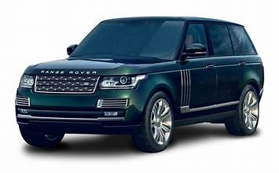

The Range Rover, produced by Land Rover,, is a luxury SUV renowned for its blend of off-road capability and high-end comfort. First introduced in 1970, it has evolved through various generations, each featuring advancements in technology, design, and performance. The vehicle offers a range of powerful engines, including V6 V8, and hybrid options. Its interior boasts premium materials, advanced infotainment systems, and spacious seating. With its iconic design, the Range Rover maintains a strong presence on and off the road, symbolizing sophistication and ruggedness. It's a favorite among those seeking luxury, versatility, and durability.
